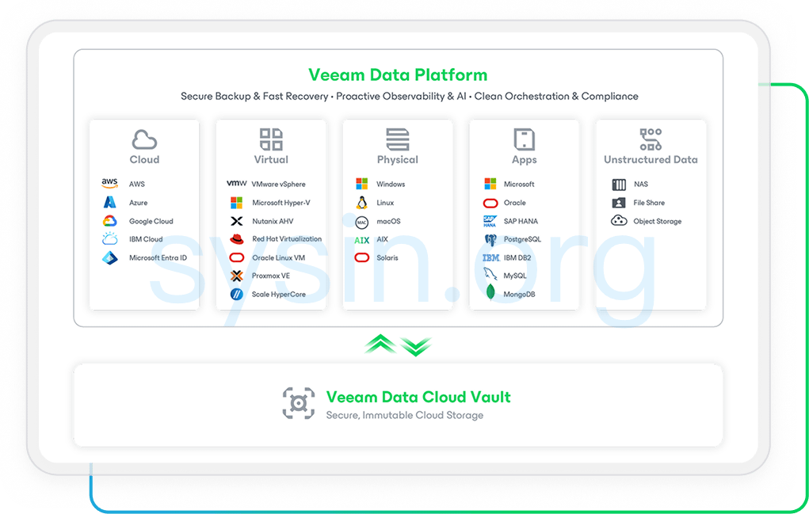
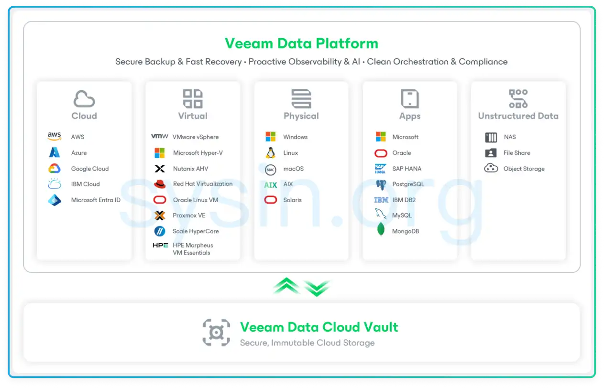

请访问原文链接：Veeam Data Platform 13.1 (Windows) - 数据保护和管理解决方案 查看最新版。原创作品，转载请保留出处。
作者主页：sysin.org
Veeam Data Platform
全面的数据保护与网络韧性
随时随地恢复数据，无论数据位于何种云环境。
Veeam Data Platform 是一款企业级数据保护与网络韧性（Cyber Resilience）解决方案，将备份、恢复、安全和合规能力统一整合到一个安全且智能的平台中，覆盖虚拟化、物理服务器、云环境以及 SaaS 工作负载，并通过单一平台进行集中管理。

概述
✅ 一个平台，零中断，全掌控
传统解决方案往往会带来安全漏洞并延缓恢复进程。Veeam 提供加固型软件设备（Hardened Software Appliance），结合即时恢复能力和 AI 驱动的智能运维，帮助减少告警噪声并降低运营风险。
内置合规性视图让您始终满足审计要求 (sysin)，而可移植、自描述的备份格式以及通用授权模式则赋予您跨平台和跨云环境的灵活性与控制力。
✅ 为您的数据提供可靠韧性
让您高枕无忧——备份安全可靠、恢复能力有保障、合规管理更加轻松。借助增强型安全防护、快速恢复能力和持续可用的运维体系，帮助企业领先应对各种中断风险，无论数据位于何处都能获得充分保护。
优势
内置智能，无限恢复
✅ 消除运维摩擦
快速部署，通过统一管理界面集中运维，并借助 AI 自动发现问题和推荐后续操作，以更少投入实现更快速恢复。
- 借助内置韧性机制实现快速部署
- 自动更新和零接触补丁管理（Zero-Touch Patching）
- 集成 RBAC 与 SSO 的统一 Web 管理界面 (sysin)
- 借助 Veeam Intelligence 实现更智能的数据保护
✅ 强化安全防护能力
通过 AI 驱动的威胁检测、不可变存储和安全恢复机制，有效抵御勒索软件攻击。
- AI 恶意软件与异常行为检测
- 基于 YARA 规则和 IOC 的威胁扫描
- 不可变备份保护关键数据
- 洁净室恢复（Cleanroom Recovery）验证安全恢复点
✅ 摆脱厂商锁定
通过可移植备份、通用授权和灵活的工作负载支持，实现随处恢复。
- 在不同平台和云环境之间自由迁移
- 可移植、自描述的备份格式
- 跨环境统一授权模式
- 借助更智能的数据分析优化云资源利用率和成本效率

面向混合云和多云环境的统一保护
版本选项
Veeam Data Platform
为您的整个混合环境（包括云端、虚拟和物理工作负载）提供数据安全、数据恢复及数据自由。现提供三个强大的企业级版本。
标准版：
高级版：
- 备份和恢复：Veeam Backup & Replication 13.1 (Windows | VMware | Hyper-V) - 备份与恢复
- 监控和分析：Veeam ONE 13.1 (Windows) - 数据保护的可观测性和智能洞察
白金版：
- 备份和恢复：Veeam Backup & Replication 13.1 (Windows | VMware | Hyper-V) - 备份与恢复
- 监控和分析：Veeam ONE 13.1 (Windows) - 数据保护的可观测性和智能洞察
- 恢复编排：Veeam Recovery Orchestrator 13.1 (Windows) - 恢复编排与合规管理
下载地址
Veeam Data Platform Version 12.3
Filename: VeeamDataPlatformPremium_v12.3.2_20251015.iso
Size: 15 GB
- Backup & Recovery (Veeam Backup & Replication™ 12.3.2)
- Monitoring & Analytics (Veeam ONE™ 12.3)
- Recovery Orchestration (Veeam Recovery Orchestrator 7.2.1)
百度网盘链接：https://pan.baidu.com/s/1XuUHLJ7ohRk6iVZ1cPFySw?pwd=2x8e
Veeam Data Platform Version 13.1
Filename: VeeamDataPlatformPremium_v13.1_20260728.iso
Size: 21.1 GB
- Backup & Recovery (Veeam Backup & Replication™ 13.1)
- Monitoring & Analytics (Veeam ONE™ 13.1)
- Recovery Orchestration (Veeam Recovery Orchestrator 13.1)
百度网盘链接：https://pan.baidu.com/s/1_vjls68cDs-lZON4BA5OCA?pwd=nk85
相关产品：
- Veeam Data Platform 13.1 (Windows) - 数据保护和管理解决方案
- Veeam Backup & Replication 13.1 (Windows | VMware | Hyper-V) - 备份与恢复
- Veeam ONE 13.1 (Windows) - 数据保护的可观测性和智能洞察
- Veeam Recovery Orchestrator 13.1 (Windows) - 恢复编排与合规管理

文章用于推荐和分享优秀的软件产品及其相关技术，所有软件默认提供官方原版（免费版或试用版），免费分享。对于部分产品笔者加入了自己的理解和分析，方便学习和研究使用。任何内容若侵犯了您的版权，请联系作者删除。如果您喜欢这篇文章或者觉得它对您有所帮助，或者发现有不当之处，欢迎您发表评论，也欢迎您分享这个网站，或者赞赏一下作者，谢谢！
 支付宝赞赏
支付宝赞赏  微信赞赏
微信赞赏赞赏一下
敬请注册！点击 “登录” - “用户注册”（已知不支持 21.cn/189.cn 邮箱）。 请勿使用联合登录（已关闭）。